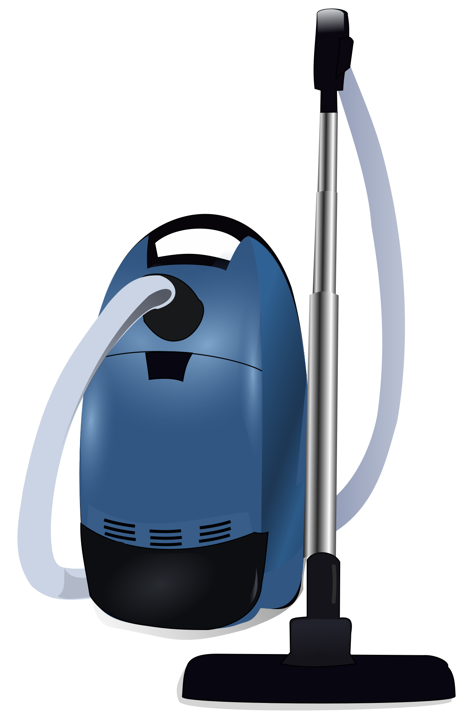

Vacuum Cleaner World 
In this implementation of the vacuum cleaner world described in in Chapter 2 of the text
Artificial Intelligence: A Modern Approach. You configure a world with blocks and dirt, then place
a vacuum cleaner in one of the cells. Blocks prevent the vacuum clear from occupying that cell. Dirt
is something that the cleaner can detect and suck up. The algorithm that the vacuum cleaner is written
in JavaScript (and evaluated in a separate non-UI thread using Web Workers).
You supply the algorithm (although a simple default is provided for you). In this code you have access
to the following simple API. There are two objects defined for you; sensor and action.
State can be preserved across steps in the simulation with the JSON object state.
Globals
| Global Object | Description |
state | A JSON object that the vacuum can use to store state information
across steps. |
sensor | A Sensor object the code in the algorithm can query to find information in the environment. |
action | An Action object that code in the algorithm uses to perform an action with the vacuum. |
log(msg) | Writes the value of the string msg to the console panel just below the world board. |
Objects
Sensor
| member | description |
canNavigate(row,col) | Returns true if the cell identified at the row and col
is in the world, and does not have a block in it. |
dirty() | Returns true if the current cell has dirt in it. |
Action
| member | description |
moveUp() |
Moves the vacuum up one row. If the cell is not navigable an exception is thrown. |
moveDown() |
Moves the vacuum down one row. If the cell is not navigable an exception is thrown. |
moveLeft() |
Moves the vacuum left one column. If the cell is not navigable an exception is thrown. |
moveUp() |
Moves the vacuum down one column. If the cell is not navigable an exception is thrown. |
moveRandom() | Moves the vacuum in a valid random direction.
|
randomInt(min,max) | Returns a random integer in the range min to max (inclusive).
|